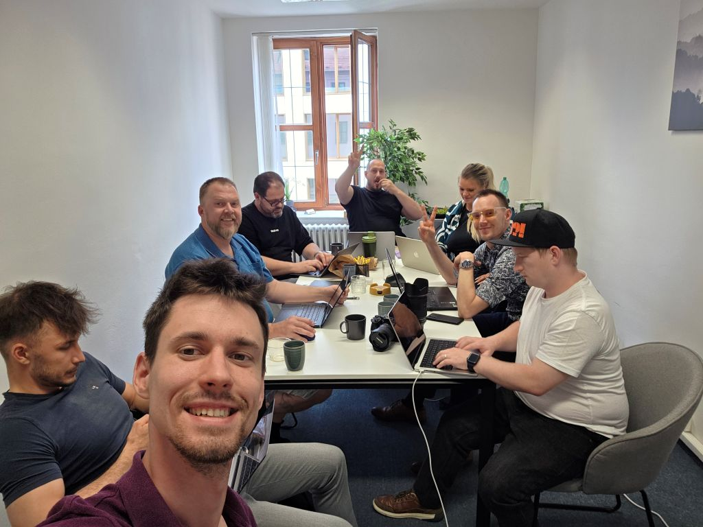

Prvnà AI workshop odstartoval! Skvělá parta a spousta objevů
V pátek 18. ÄŤervence probÄ›hl v mĂ© brnÄ›nskĂ© kanceláři historicky prvnĂ workshop zaměřenĂ˝ na praktickĂ© vyuĹľitĂ AI nástrojĹŻ od Google. Sešla se naprosto skvÄ›lá parta podnikatelĹŻ a freelancerĹŻ a atmosfĂ©ra byla od začátku nabitá zvÄ›davostĂ a chutĂ objevovat. CĂlem bylo demystifikovat umÄ›lou inteligenci a ukázat si, jak nám mĹŻĹľe v reálnĂ©m ĹľivotÄ› šetĹ™it ÄŤas, penĂze a nervy.

Co jsme se nauÄŤili?
Prošli jsme si naprostĂ© základy a ukázali si nejvÄ›tšà rozdĂly mezi jednotlivĂ˝mi nástroji. HlavnĂ myšlenkou bylo pochopit, Ĺľe AI nenĂ magie, ale silnĂ˝ pomocnĂk, se kterĂ˝m je tĹ™eba se nauÄŤit komunikovat.
- Co je a co nenĂ AI: VysvÄ›tlili jsme si rozdĂl mezi AI jako kreativnĂm asistentem a běžnĂ˝m vyhledávaÄŤem. Rozebrali jsme, proÄŤ AI obÄŤas "halucinuje" a jak je dĹŻleĹľitĂ© ověřovat fakta.
- Gemini v praxi: Vyzkoušeli jsme si, jak s pomocĂ Gemini vytvoĹ™it obsah na sociálnĂ sĂtÄ›, napsat e-mail nebo analyzovat jednoduchĂ˝ text.
- NotebookLM jako znalostnà báze: Ukázali jsme si, jak si vytvořit vlastnà soukromou databázi z dokumentů, smluv nebo podcastů, která vám odpovà přesně a bez výmyslů.
- BezpeÄŤnost na prvnĂm mĂstÄ›: ZmĂnili jsme i rizika a ukázali si, proÄŤ nikdy nevkládat citlivá firemnĂ data do veĹ™ejnĂ˝ch verzĂ AI nástrojĹŻ.
- Prompt engineering: V rámci pokroÄŤilĂ˝ch technik promptovánĂ jsme si prakticky ukázali rozdĂly mezi prostĂ˝mi a kvalitnĂmi vstupy a nastavili si asistenty pro aplikaci tÄ›chto promptovacĂch technik.
NejvÄ›tšà radost jsem mÄ›l z toho, kdyĹľ účastnĂkĹŻm došlo, Ĺľe AI nenĂ jen pro "ajťáky". KdyĹľ vidÄ›li, Ĺľe si bÄ›hem pár minut dokážà pĹ™ipravit pĹ™ĂspÄ›vek, kterĂ˝ by jim jinak trval hodinu, bylo to k nezaplacenĂ.
Co bude dál?
ObrovskĂ˝ zájem a pozitivnĂ ohlasy mÄ› utvrdily v tom, Ĺľe tato sĂ©rie workshopĹŻ má smysl. PrvnĂ vlaštovka se povedla a já uĹľ teÄŹ pĹ™ipravuji pokraÄŤovánĂ.
Nestihli jste to? Dalšà termĂn se chystá uĹľ 22. srpna 2025. Pokud chcete zjistit, jak vám AI mĹŻĹľe usnadnit Ĺľivot, nenechte si ho ujĂt.
Chci se podĂvat na dalšà workshop ↠ZpÄ›t na pĹ™ehled ÄŤlánkĹŻ